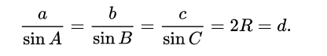
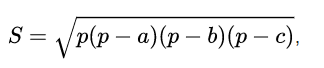

Формули:
Косинусова теорема:
Квадратът на коя да е страна в триъгълник е равен на сбора от квадратите на другите две страни минус удвоеното
произведение на тези две страни и косинуса на ъгъла, заключен между тях :

Синусова теорема:
За всеки триъгълник отношението на коя да е страна и синуса на срещулежащия ъгъл е равно на диаметъра на описаната около триъгълника окръжност. 
Хероновата формула:
В геометрията Хероновата формула служи за намиране на лице на произволен триъгълник по дадени 3 негови страни.
В най-опростения си вид изглежда така:
